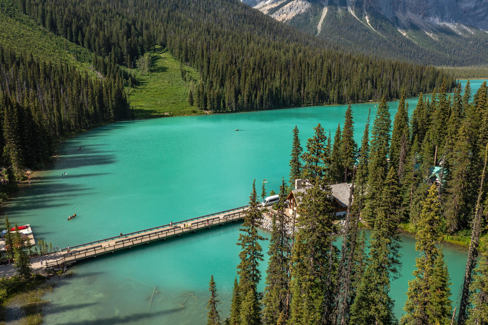

← 트래킹
🥾 Emerald Lake
Yoho National Park
⭐ 요호 국립공원을 대표하는 에메랄드빛 호수 산책 코스

📅 우리 일정
Day 4 오후
🏞 기대 풍경
💎 에메랄드빛 호수와 투명한 물빛
🏔 President Range의 웅장한 산세
🌲 호숫가 숲길과 평화로운 산책로
🌉 Emerald Lake Bridge
📸 캐나다 로키 최고의 사진 명소
📏 기본 정보
🚶 걷는 거리
호수 한 바퀴 약 5.2km
⏱ 걷는 시간
약 1.5~2시간
💪 난이도
쉬움
📈 고도차
약 90m
🚻 편의시설
✔ 주차장
✔ 화장실
✔ Emerald Lake Lodge
✔ 카페 및 레스토랑
✔ 카누 대여 (여름 시즌)
🎒 준비물
👟 편한 운동화
💧 물 500ml~1L
🧥 얇은 바람막이
🧴 선크림 및 선글라스
📷 카메라
💡 여행 Tip
✔ 에메랄드 레이크는 시계 방향, 반시계 방향 어느 쪽으로 걸어도 좋습니다.
✔ 호수 입구 다리(Bridge)는 가장 인기 있는 포토 스팟으로, 오전 시간대가 비교적 한산합니다.
✔ 호숫가 산책로는 대부분 평탄하여 가족 여행객도 부담 없이 걸을 수 있습니다.
✔ 시간이 부족하다면 호수 입구와 다리 주변만 둘러봐도 대표 풍경을 충분히 감상할 수 있습니다.
✔ 여유가 있다면 카누를 타며 에메랄드빛 호수를 색다른 시각에서 즐겨보는 것도 추천합니다.
📍 Google Maps
🗺 트레일 지도
← 트래킹